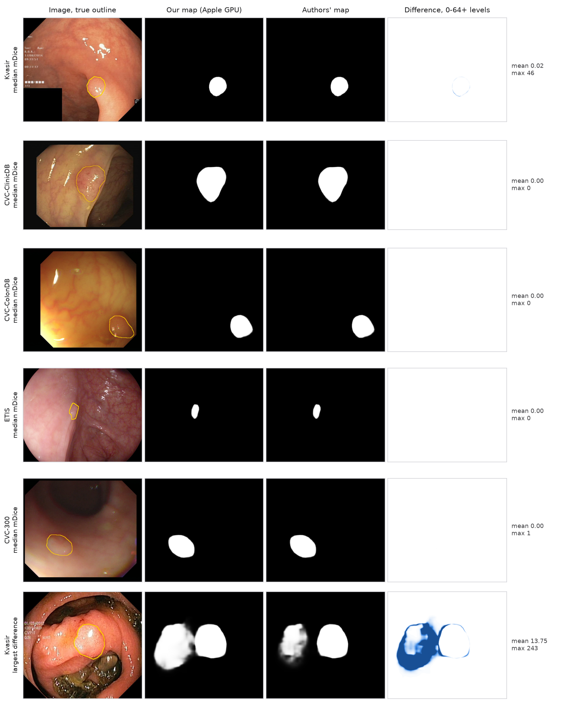

Stage 3. Can we trust our ruler?
Before any of our own numbers count, our code has to give PraNet's published numbers from PraNet's own files. It does: first from the prediction maps the authors released, then from their released weights, run on a MacBook Air.
Three steps, one commit each
The rule, fixed in stage 1 as decision D13: every number must land within 0.005 mDice of the paper.
3.1 Fetch the reference
PraNet's code at a pinned commit, its released weights, and the prediction maps the authors published for PraNet and three baselines.
fetch_pranet.py3.2 Check the ruler
Score the authors' own maps with our port of their evaluation. Same files, so only the evaluation code can differ.
Published maps report3.3 Run the whole pipeline
Run the released weights on the Apple GPU and on the CPU, following the authors' test script step by step, and score the output.
Released weights reportWhy two checks, not one
A number in a paper is the end of a long path. If we only ran the weights and the numbers disagreed, we would not know which step was wrong. So we checked the path in two halves.
From a colonoscopy frame to one number
Choose a check to see which steps run in our code. The rest come from the authors' files.
The authors' test script, MyTest.py
- 1Read the imageDecode the PNG or JPEG file into pixels.
- 2Resize and normalise352 × 352, bilinear, ImageNet mean and spread.
- 3Forward passPraNet with the released weights. Keep the last of its four outputs.
- 4Back to full sizeUpsample to the mask's size, then a sigmoid gives 0-1.
- 5Save as 8 bitsStretch to 0-1 and write a PNG with levels 0-255.
The authors' evaluation, eval/main.m
- 6Stretch and thresholdStretch again, then cut the map at 256 thresholds.
- 7AverageDice at each threshold, mean over thresholds, mean over images.
With the authors' maps, steps 1-5 are already done: the files are their output. Only our evaluation runs, so any difference is our evaluation's fault.
Both checks pass
Each mark is one result, drawn as its distance from the number printed in the paper. The band is the 0.005 tolerance. Hover a mark for its value.
PraNet's mDice, ours against the paper
- 3.2 Authors' maps, our evaluation
- 3.3 Released weights, our whole pipeline
Our maps next to the authors'
One image per test set, the one with the set's median score, and the Kvasir image where the two maps differ most. On four test sets the difference column is empty: the maps are the same to within one level out of 255.

make stage3-figures from the maps saved by make pranet-run.The one open question: Kvasir
On Kvasir, and only there, every one of our maps differs a little from the authors'. The mean is still within the tolerance against the paper, but the gap to the authors' maps is larger than chance.
Each Kvasir image, our score minus the authors'
Kvasir is the only test set that started as JPEG photos, so the first suspect was the JPEG decoder. Switch the decoder and watch the dots.
A different decoder moves single images a lot but leaves the mean where it was, and takes the maps further from the authors'. So the decoder is not the explanation. Paired bootstrap against the authors' maps: –.
| Suspect | Test | Result |
|---|---|---|
| The model or our code | The other four test sets | All 698 maps within one level |
| The Apple GPU | Same run on the CPU | Same scores within 0.00001 |
| Our copy of the images | Original Kvasir-SEG download | Pixel for pixel the same |
| The JPEG decoder | Apple's decoder instead of Pillow | Mean moves by 0.0001 |
The same model on two processors
PraNet was trained and published on NVIDIA GPUs. Here it runs on Apple's GPU and on the CPU, and the scores agree to the fifth decimal on every image.
Forward pass per image, median
Test sets in the order they ran. After five warm-up passes, timed with the GPU synchronised. Hover a bar for its value.
- Apple GPU
- CPU
In the code
Three details that decide the last digits.
Saving the map: one stretch you can see, one you cannot
res = (res - res.min()) / (res.max() - res.min() + 1e-8) # MyTest.py:37
lo, hi = res.min(), res.max()
levels = (np.clip((res - lo) * (255.0 / (hi - lo)), 0, 255) + 0.5).astype(np.uint8)The authors' script stretches the map once, then saves it with an old SciPy function that stretches it again and rounds by adding 0.5. Our version does both. A plain (res * 255).astype(np.uint8) would cut off the fraction instead of rounding, and put many pixels one level below the authors' files.
MATLAB's thresholds, to the last bit
n = int(round((stop - start) / step))
k = np.arange(n + 1)
out = np.where(k <= n // 2, start + k * step, stop - (n - k) * step)The evaluation cuts each map at 1:-1/255:0. MATLAB builds the first half of that list forward from 1 and the second half backward from 0, so its values differ from the obvious formula in the last bits. Those bits decide ties when a pixel sits exactly on a threshold. The effect turned out to be tiny, at most 0.0001 mDice, but now it is measured, not assumed.
Boundary IoU in 3 ms instead of 100 s
m, w = x, 1
while 2 * w <= k:
n = m.shape[dim] - w
m = m.narrow(dim, 0, n) | m.narrow(dim, w, n)
w *= 2
return m.narrow(dim, 0, out_len) | m.narrow(dim, k - w, out_len)On ETIS's 1225 × 966 images, PyTorch's CPU max-pool took 50 s per pass. Doubling the window at each step covers a 63-pixel window in 5 steps and two overlapping halves. A test checks it against the max-pool on 200 random cases.
What is still open
- The Kvasir gap0.0038 below the authors' maps, driven by a handful of images. Within the tolerance against the paper, recorded as open, and named in every table that shows Kvasir.
- PraNet on CVC-ColonDB: 0.709 or 0.712The PraNet paper prints 0.709. The released maps and weights both give 0.7115, the number the Polyp-PVT paper reports. We use the measured value and say so.
- Baselines scored on 359 of 380 imagesSome released baseline maps are .tif files, and the evaluation reads only .png. With all 380 maps the baselines drop by up to 0.013. Our own models are always scored on every image.
- Image decoding changes single scoresAnother JPEG decoder moved one Kvasir image by 0.17 mDice. Every run uses the same decoder, Pillow, and the lock file pins its version.
- Speed depends on heatOne median per run hides throttling. Later speed tables will show the spread over repeated, alternating runs.
- MATLAB itself never ranWe ported the evaluation to Python. It reproduces all 20 published numbers, which is strong evidence, but not a run of the original code.
Questions you should be ready for
Why reproduce a paper before training anything?
Our results will sit next to published ones. If our evaluation measured differently, every comparison would mix model differences with measurement differences. Matching the paper from the authors' own files shows the ruler is the same.
Why score the authors' maps first, and not just run the weights?
It splits the problem in two. With the authors' maps, only our evaluation can be wrong. Once that matches, running the weights tests everything before it: loading, preprocessing, inference and saving. A mismatch then points to one half.
Your Kvasir number is 0.0036 below the paper. Is that a failure?
Against the rule we set before looking, no: it is within 0.005. But against the authors' own maps the gap is 0.0038, and a paired bootstrap puts it below zero. So it is a real difference, and we say so instead of rounding it away. Four suspects are ruled out; the cause is still open.
What is a paired bootstrap, and why use it here?
Both results are on the same 100 images, so we look at the per-image differences. We resample those 100 differences with replacement 10,000 times and take the middle 95% of the means. Pairing removes the spread between easy and hard images, which is much larger than the effect.
How do you know the Apple GPU gives correct results?
The same run on the CPU agrees within 0.00001 mDice on every image, and on four test sets the maps match what the authors produced on an NVIDIA GPU to within one level out of 255.
Why do you report Dice at 0.5 next to mDice?
mDice averages over 256 thresholds after stretching each map, so it is only comparable with other mDice numbers. Dice at a fixed 0.5 threshold is what a deployed model would use. For PraNet they are close, 0.894 and 0.899 on Kvasir, but stage 2 showed they can come apart.
Your first speed number was 56 ms and now it is 31 ms. Which is right?
31 ms. The 56 ms came from a quick check right after loading, without warm-up, so it included one-time setup. The run script warms up, synchronises the GPU before reading the clock, and takes the median over 798 images. The old number stays in the journal as history.
Glossary
- Released weights
- The trained model parameters the authors published, so anyone can run their model without training it.
- Prediction map
- The model's output for one image: a grey picture where brighter means more likely to be polyp.
- 8-bit level
- One of 256 grey values, 0 to 255, in a saved PNG. "Within one level" means nearly identical.
- mDice
- PraNet's score: Dice averaged over 256 thresholds on a stretched map, then over images.
- Tolerance
- The largest gap to the paper we accept: 0.005 mDice, fixed in decision D13 before any run.
- Paired bootstrap
- Resampling per-image differences between two results to get a confidence interval for their mean gap.
- JPEG decoder
- The software that turns a compressed JPEG file into pixels. Different decoders can give slightly different pixels.
- Throttling
- A chip slowing itself down when it gets hot. The MacBook Air has no fan, so long runs can slow down.